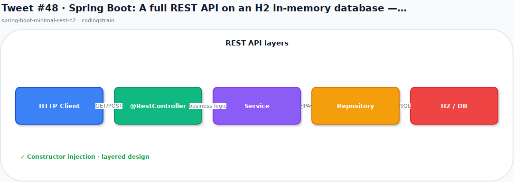

Tweet #48
Architecture — diagrams.net

Code preview
// 1) JPA entity mapped to a table in the H2 database
@Entity
@Table(name = "Book")
public class Book {
@Id private String id;
private String title;
private String author;
// getters / setters omitted
}
// 2) Repository — extend JpaRepository for full CRUD, add finders as needed
@Repository
public interface BookRepository extends JpaRepository<Book, String> {
List<Book> findByAuthor(String author);
}// 3) REST controller exposes the CRUD over HTTP
@RestController
@RequestMapping("/library")
public class BookController {
@Autowired
private BookService books;
@GetMapping("/book")
public List<Book> findAll() { return books.findAll(); }
@PostMapping("/book")
public Book add(@RequestBody Book book) { return books.save(book); }
@DeleteMapping("/book/{id}")
public void delete(@PathVariable String id) { books.deleteById(id); }
}
// 4) application.yaml — in-memory H2, nothing to install
// spring.datasource.url: jdbc:h2:mem:mydb
// spring.sql.init.mode: always # auto-runs schema.sql + import.sql
// spring.h2.console.enabled: true # browse data at /h2-consoleCopy for X (231/280)